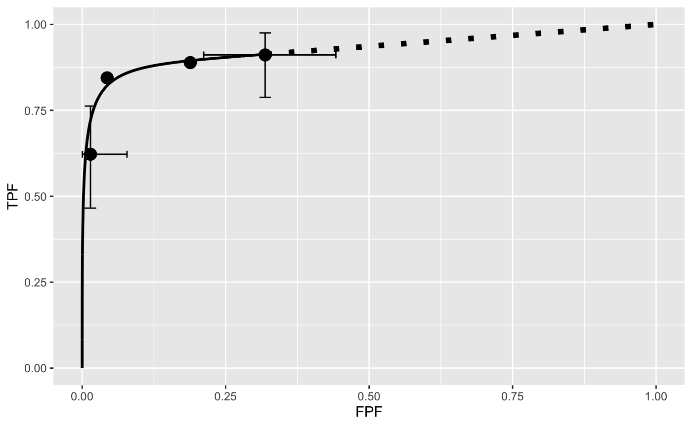
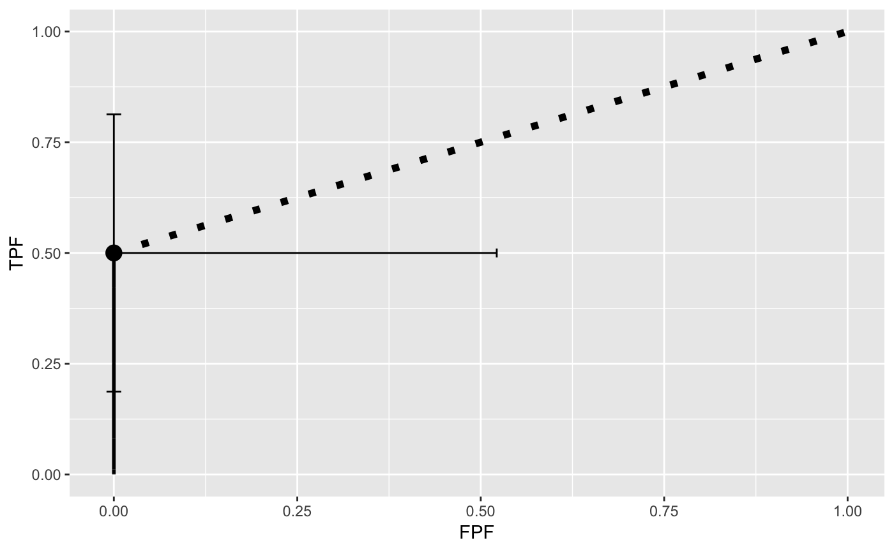
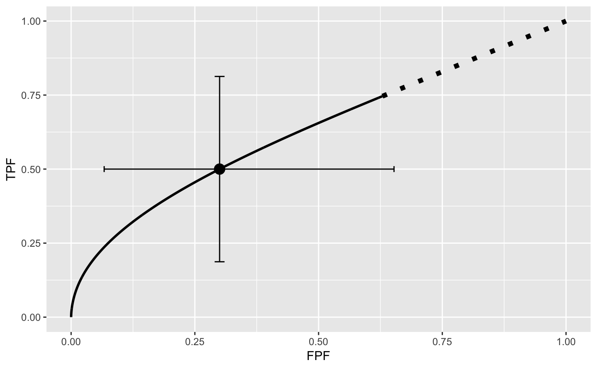
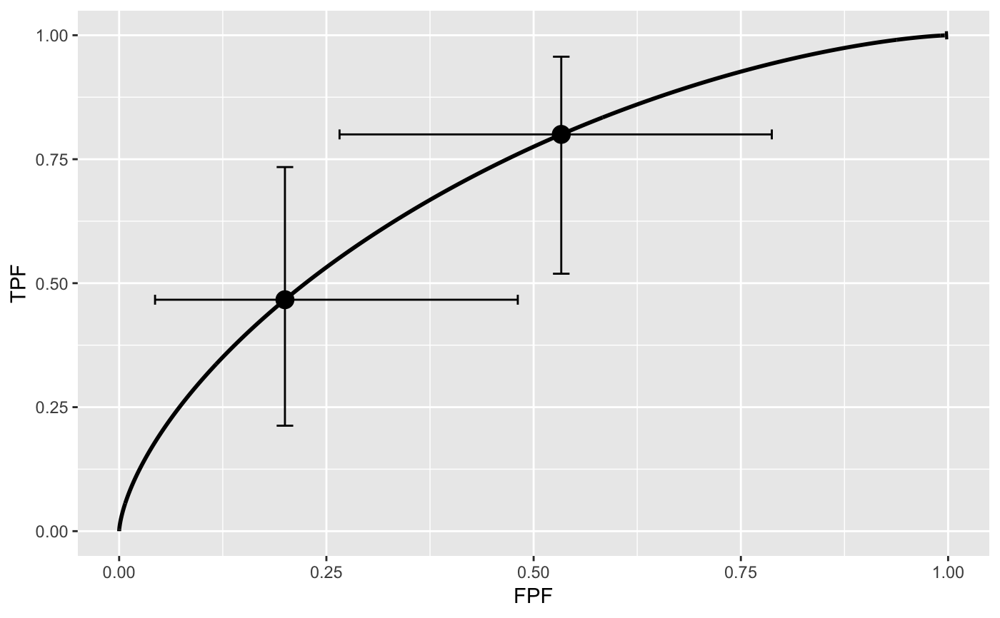
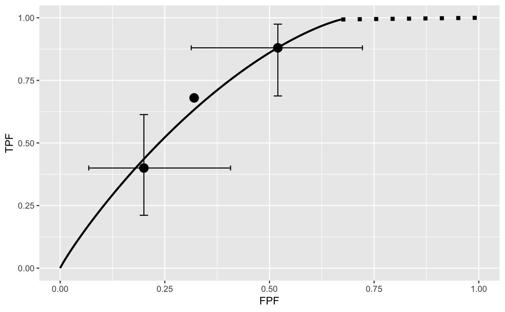
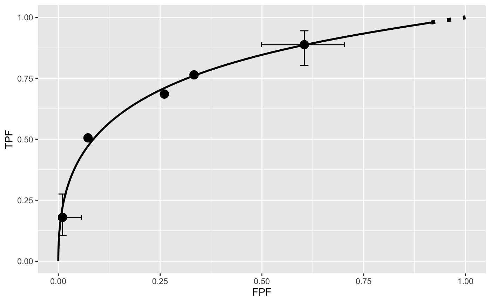

FitRsmRoc.RdFit an RSM-predicted ROC curve to a binned ROC dataset
FitRsmRoc(binnedRocData, lesDistr, trt = 1, rdr = 1)
| binnedRocData | The binned ROC dataset containing the data |
|---|---|
| lesDistr | The lesion distribution matrix |
| trt | The desired treatment, default is 1 |
| rdr | The desired reader, default is 1 |
The return value is a list with the following elements:
The mean of the diseased distribution relative to the non-diseased one
The Poisson parameter describing the distribution of latent NLs per case
The binomial success probability describing the distribution of latent LLs per diseased case
The RSM cutoffs, zetas or thresholds
The RSM fitted ROC-AUC
The standard deviation of AUC
The initial value of negative LL
The final value of negative LL
The chisquare goodness of fit results
The covariance matrix of the parameters
A ggplot2 object containing the fitted
operating characteristic along with the empirical operating points.
Use print to display the object
If dataset is FROC, first convert it to ROC, using DfFroc2Roc. MLE ROC algorithms
require binned datasets. Use DfBinDataset to perform the binning prior to calling
this function.
In the RSM: (1) The (random) number of latent NLs per case is Poisson distributed
with mean parameter lambdaP, and the corresponding ratings are sampled from
\(N(0,1)\). The (2) The (random) number of latent LLs per diseased case is
binomial distributed with success probability nuP and trial size equal to
the number of lesions in the case, and the corresponding ratings are sampled from
N(\(mu\),1). (3) A latent NL or LL is actually marked if its rating exceeds
the lowest threshold zeta1. To avoid clutter error bars are only shown for the
lowest and uppermost operating points. Because of the extra parameter, and the
requirement to have five counts, the chi-square statistic often cannot be calculated.
Chakraborty DP (2006) A search model and figure of merit for observer data acquired according to the free-response paradigm. Phys Med Biol 51, 3449-3462.
Chakraborty DP (2006) ROC Curves predicted by a model of visual search. Phys Med Biol 51, 3463--3482.
Chakraborty DP (2017) Observer Performance Methods for Diagnostic Imaging - Foundations, Modeling, and Applications with R-Based Examples, CRC Press, Boca Raton, FL. https://www.crcpress.com/Observer-Performance-Methods-for-Diagnostic-Imaging-Foundations-Modeling/Chakraborty/p/book/9781482214840
## Test with included ROC data (some bins have zero counts) lesDistr <- UtilLesionDistribution(dataset02) retFit <- FitRsmRoc(dataset02, lesDistr) print(retFit$fittedPlot)## Test with included degenerate ROC data lesDistr <- UtilLesionDistribution(datasetDegenerate) retFit <- FitRsmRoc(datasetDegenerate, lesDistr);print(retFit$fittedPlot)## Test with single interior point data fp <- c(rep(1,7), rep(2, 3)) tp <- c(rep(1,5), rep(2, 5)) binnedRocData <- Df2RJafrocDataset(fp, tp) lesDistr <- UtilLesionDistribution(binnedRocData) retFit <- FitRsmRoc(binnedRocData, lesDistr);print(retFit$fittedPlot)## Test with two interior data points fp <- c(rep(1,7), rep(2, 5), rep(3, 3)) tp <- c(rep(1,3), rep(2, 5), rep(3, 7)) binnedRocData <- Df2RJafrocDataset(fp, tp) lesDistr <- UtilLesionDistribution(binnedRocData) retFit <- FitRsmRoc(binnedRocData, lesDistr);print(retFit$fittedPlot)## Test with three interior data points fp <- c(rep(1,12), rep(2, 5), rep(3, 3), rep(4, 5)) #25 tp <- c(rep(1,3), rep(2, 5), rep(3, 7), rep(4, 10)) #25 binnedRocData <- Df2RJafrocDataset(fp, tp) lesDistr <- UtilLesionDistribution(binnedRocData) retFit <- FitRsmRoc(binnedRocData, lesDistr);print(retFit$fittedPlot)## test for TONY data, i = 2 and j = 3; only case permitting chisqure calculation lesDistr <- UtilLesionDistribution(dataset01) rocData <- DfFroc2Roc(dataset01) retFit <- FitRsmRoc(rocData, lesDistr, trt = 2, rdr = 3) print(retFit$fittedPlot)retFit$ChisqrFitStats#> $chisq #> [1] 1.352244 #> #> $pVal #> [1] 0.2448863 #> #> $df #> [1] 1 #>